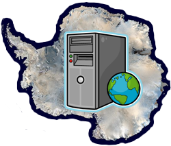

Simulation of the evolution and dynamics of the Antarctic ice sheet in past and future climatesThe Antarctic ice sheet is by far the largest single land ice body on the present-day Earth, with a total ice volume of 24.7 x 10^6 km^3 and in addition 0.7 x 10^6 km^3 of the attached ice shelves (Ross Ice Shelf, Filchner-Ronne Ice Shelf, Amery Ice Shelf and others). This corresponds to a sea level equivalent of about 56.6 m (Lemke et al. 2007, in IPCC AR4). Recent results indicate that the Antarctic ice sheet shows a surprisingly strong reaction on global warming (Bindoff et al. 2007, in IPCC AR4). The main contribution seems to be from West Antarctica, which goes along with an observed speed-up of ice streams and outlet glaciers like Pine Island Glacier. This project aimed at investigating the evolution and dynamics of the Antarctic ice sheet in changing climates in the past (glacial-interglacial cycles) and future (global warming scenarios). On the operational side, a key element was to develop the ice sheet model SICOPOLIS into a high-resolution model for the Antarctic ice sheet which treats the grounded ice sheet, the ice shelves, the grounding lines and the calving fronts in a physically adequate, state-of-the-art fashion. Key scientific questions to be addressed with this integrated model were: (I.) What is the contribution of the Antarctic ice sheet to past sea level changes over glacial-interglacial cycles? (II.) What is the contribution of the Antarctic ice sheet to future sea level changes under global warming conditions? (III.) Can ice-dynamic processes lead to accelerated decay of the Antarctic ice sheet in the next decades and centuries? (IV.) Is there any evidence for instabilities of the West Antarctic ice sheet, triggered either (a) by natural climate variability in the past or (b) by global warming in the future? Supplementary simulations for the Greenland ice sheet were also carried out. Results served as input for the Fifth IPCC Assessment Report (AR5). One doctoral thesis (Tatsuru Sato) was completed at Hokkaido University within this project.Project membersPrincipal investigatorDr. Ralf Greve Co-investigators (kenkyû-buntansha):Dr. Ayako Abe-Ouchi Dr. Shin Sugiyama Co-investigators (renkei-kenkyûsha):Dr. Shuji Fujita Dr. Hideaki Motoyama Dr. Fuyuki Saito Postdoctoral ResearcherDr. Hakime Seddik Research collaboratorsDr. Olivier Gagliardini Prof. Angelika Humbert Dr. Nina Kirchner Dr. Thomas Zwinger Project assistantMs. Ayako Kakugo Ms. Eriko Shirasawa StudentsMr. Tatsuru Sato Research area
Publications and presentationsDownload PDF.
Research funding organisationsJapan Society for the Promotion of Science (JSPS). Institute of Low Temperature Science (ILTS). ---------- |